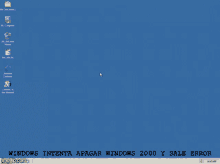

Microsoft Windows 95 |
|
|---|---|
|  |
Version :- Windows 95 A,B
Release Date :- August 1995 Founder :- Bill Gates Comapany :- Microsoft |
|
As the name implies, Windows 95 arrived in August 1995 and with it brought the first ever Start button and Start menu (launched with a gigantic advertising campaign that used the Rolling Stones’ Start Me Up, and a couple of months later Friends stars Jennifer Aniston and Matthew Perry. Could it be any more up-to-date?) It also introduced the concept of “plug and play” – connect a peripheral and the operating system finds the appropriate drivers for it and makes it work. That was the idea; it didn’t always work in practice. Windows 95 also introduced a 32-bit environment, the task bar and focused on multitasking. MS-DOS still played an important role for Windows 95, which required it to run some programmes and elements |
|